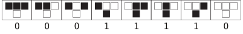

This is a demo file for all features available.
This is a title
Text can be italic (*text*), bold (**text**), or both (***text***)!
Inline code such as this is displayed by surround your text with a single back tick on each side `text`.
You can have inline code such as def main(). If you surround the inner code by '$' signs on both side then it renders [begin-latex-inline]\LaTeX[end-latex-inline]. This formula [begin-latex-inline]E=mc^2[end-latex-inline] relates the energy contained by an object with its mass.
This is a secondary title
Links are also supported. Check out my github. Use the following formatting [title](https://example.com).
If no title is provided, then the link will be in preview mode [](https://example.com):
omaraflak - Overview
Keep learning . omaraflak has 123 repositories available. Follow their code on GitHub.
github.com
You can include images as well with :
The height and/or width of the image can be specified in pixels or percentage using the following syntax:
 # height is 100px
 # width is 50% of the page
 # height is 200px and width is 200px
Use --- for a horizontal line.
Quotes need to start with >. It can extend multiple lines.Quotes need to start with >. It can extend multiple lines.Quotes need to start with >. It can extend multiple lines.
You can display code blocks by surround your code with 3 back ticks ``` before and after the code. Specify a language after the opening backticks to change the code highlighting.
def multiply(a: int, b: int) -> int:
return a * b
If the language specified is latex, i.e. ```latex, then the renderer will show [begin-latex-inline]\LaTeX[end-latex-inline] in display mode.
[begin-latex](a+b)^n = \sum_{i=0}^n {n \choose k} a^k b^{n-k}
[end-latex]
The renderer also supports Graphviz! Juse use ```dot for the opening code block.
digraph G {
bgcolor="transparent"; // Keep background transparent
// Graph attributes
graph [
labelloc="t" // Label at top
fontname="Courier"
fontsize=20
rankdir="LR" // Left to Right layout
];
// Node styles
node [
shape=box
style=filled
fontname="Courier"
fontsize=12
];
// Nodes with specific colors
NodeA [label="Start Process" fillcolor="#FFDDC1" color="#FFA07A" fontcolor="#8B0000"]; // Light peach, salmon border, dark red text
NodeB [label="Data Input" fillcolor="#D1FFD1" color="#3CB371" fontcolor="#006400"]; // Light green, medium sea green border, dark green text
NodeC [label="Processing" fillcolor="#C1D1FF" color="#6A5ACD" fontcolor="#191970"]; // Light blue, slate blue border, midnight blue text
NodeD [label="Validation" fillcolor="#FFFFC1" color="#FFD700" fontcolor="#B8860B"]; // Light yellow, gold border, dark goldenrod text
NodeE [label="Output Result" fillcolor="#FFC1FF" color="#DA70D6" fontcolor="#800080"]; // Light magenta, orchid border, purple text
NodeF [label="Error Handling" fillcolor="#FFC1C1" color="#DC143C" fontcolor="#8B0000" shape=ellipse]; // Light red, crimson border, dark red text, ellipse shape
// Edges with specific colors and styles
NodeA -> NodeB [label="Initialize" color="#4682B4" penwidth=2]; // Steel blue
NodeB -> NodeC [label="Process Data" color="#2E8B57" style=dashed]; // Sea green, dashed
NodeC -> NodeD [label="Validate" color="#8A2BE2" penwidth=1.5]; // Blue violet
NodeD -> NodeE [label="Success" color="#008000" style=bold]; // Green, bold
NodeD -> NodeF [label="Failure" color="#FF0000" style=dotted]; // Red, dotted
NodeE -> NodeA [label="Loop Back" color="#FF4500" arrowhead=vee]; // Orange red, vee arrowhead
NodeF -> NodeA [label="Retry" color="#8B4513" style=dotted]; // Saddle brown, dotted
}